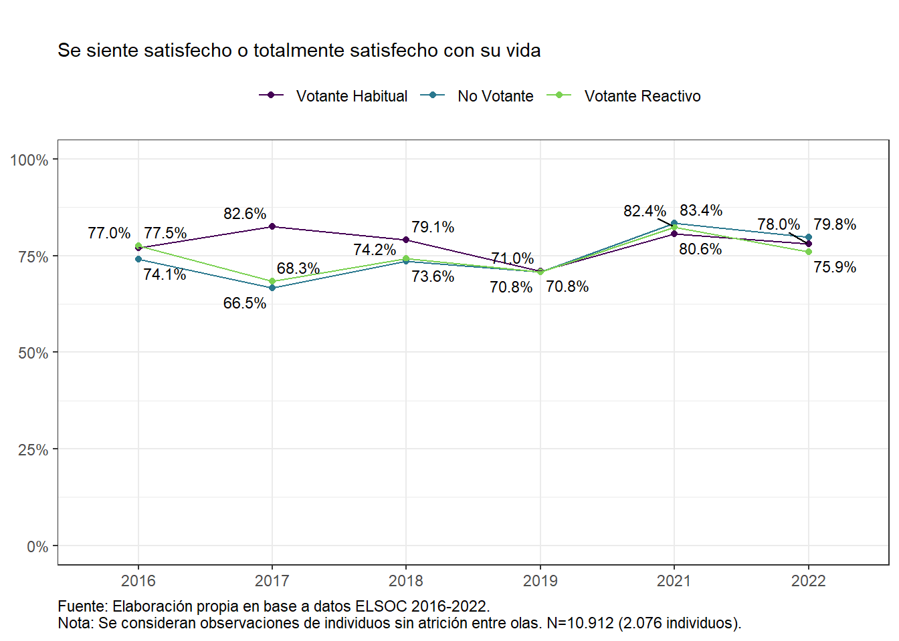

Radiografía del Cambio Social en Chile 2016-2021
1
author: “González, Roberto; Bargsted, Matías; Figuereido, Ana; Miranda, Daniel; Cerda, Edgardo; Plaza, Alejandro; Salas-Lewin, Rocío”
2
Presentación del estudio
2.1
Sobre COES
2.2
Sobre ELSOC
Descripción del estudio
Acceso a Bases de Datos ELSOC
Características del diseño muestral
Características del levantamiento de datos
2.3
Atrición de la muestra
Atrición acumulada según Sexo, Grupo etáreo, Nivel educacional y Estrato
2.4
Foco en el cambio longitudinal
3
Transformaciones políticas
3.1
Participación electoral y proceso constituyente
3.2
Actitudes hacia la democracia
3.3
Identidad e involucramiento político
3.4
Confianza institucional
3.5
Movilización social
3.6
Opinión pública y contingencia
3.7
Justificación de la violencia
4
Cohesión social
4.1
Relaciones sociales de igualdad
4.1.1
Confianza interpersonal
4.1.2
Reconocimiento y respeto de la diversidad
4.1.3
Lazos
4.2
Sentido de pertenencia
4.2.1
Identificación con el país
4.2.2
Percepción de justicia
4.2.3
Confianza institucional
4.3
Orientación al bien común
4.3.1
Solidaridad
4.3.2
Participación cívica
4.4
Vínculos Territoriales
4.4.1
Vínculos territoriales
Ver fuente
Radiografía del Cambio Social en Chile 2016-2022
Capítulo 4
Cohesión social
4.1
Relaciones sociales de igualdad
4.1.1
Confianza interpersonal

4.1.2
Reconocimiento y respeto de la diversidad
4.1.3
Lazos
4.2
Sentido de pertenencia
4.2.1
Identificación con el país
4.2.2
Percepción de justicia
4.2.3
Confianza institucional
4.3
Orientación al bien común
4.3.1
Solidaridad
4.3.2
Participación cívica
4.4
Vínculos Territoriales
4.4.1
Vínculos territoriales